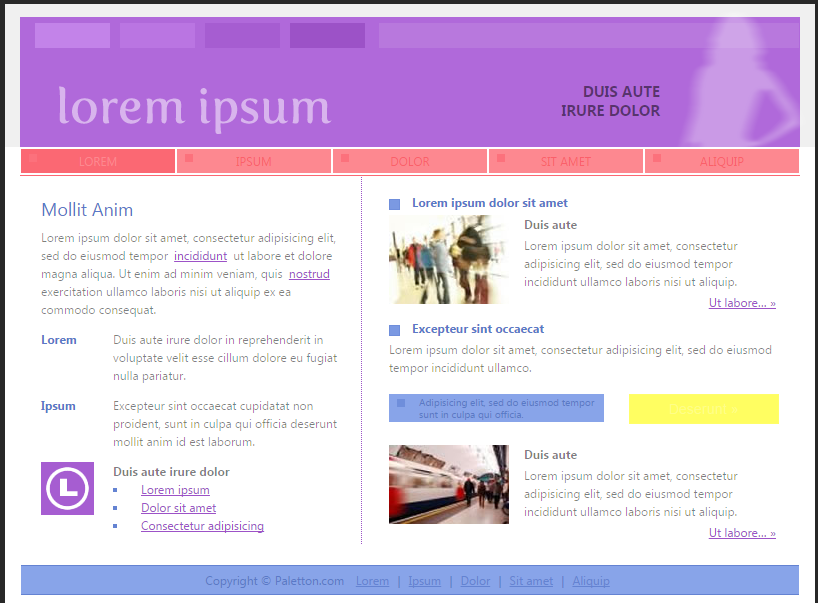

<!DOCTYPE html>
<html>
  <head>
      <link type="text/css"rel="stylesheet"href="style/style.css"media="screen">
    <meta charset="utf-8">
    <title>Color:Alexis Miranda</title>
  </head>
</html>
<body>
  <div>
    <a href="#main">skip to main content</a>
  </div>
<h1>Unit 2 color</h1>
  <div>
    <nav>
    <ul>
        <li><a href="index.html">Home</a></li>
        <li><a href="color.html">Color</a></li>
        <li><a href="typography.html">Typography</a></li>
        <li><a href="designelements.html">Design Elements</a></li>
        <li><a href="graphics.html">Graphics</a></li>
        <li><a href="scripting.html">Java Skript</a></li>
        <li><a href="usability.html">Usability</a></li>
        <li><a href="publishing.html">Publishing</a></li>
    </ul>
  </nav>
  </div>
  <main id="main">
        <P>
<h2>Client 1 Color Scheme: kindergarten teacher</h2>
  <p>My color scheme</p>
	

<p>
  <a href="images/Capture.png">Client 1 Page Simulation:</a>
</p>

<p>Explanation:
I would expect a kindergarten teacher to have a bright color scheme. I also would
expect it to stand out to the young students. This is why I
chose such bright colors that stand out and are colorful. This makes it more
attractive to students because it catches their attention.</p>

<h2>Client 2 Color Scheme: Medical Clinic</h2>

<p>My color scheme</p>

<p>
  <a href="images/medical clinic.PNG">Client 1 Page Simulation</a>
</p>

<p>Explanation:
The reason why I chose these colors is because normaly I think of kaiser
permanente’s color scheme. When I think of kaiser permanente all i can think of
is blue and white diffrent shades of blue and diffrent shades of white.
</p>
</body>
</html>
